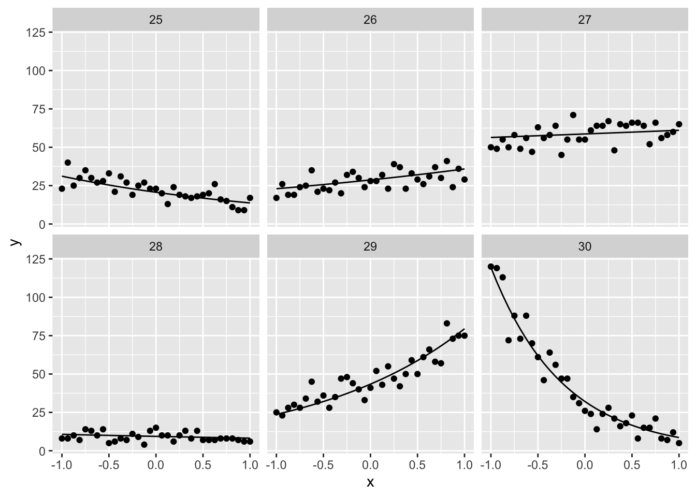

library(targets)
suppressPackageStartupMessages(library(tidyverse))Validating a brms model with targets
Goal
to create a workflow for validating brms models using a targets pipeline
the idea is to use the tools already in brms and targets to automate this useful and common task.
- set up a model formula using
brmssyntax. - define the priors using
brmssyntax - simulate out of the prior using
brms - for each (of some sample of) prior simulation, fit the model using
targetsdynamic branching - calculate the proportion of simulated datasets where the model was able to recover parameters
- put results in a markdown document with
tarchetypes::tar_quarto
Results
here is an example of some simulated datasets
tar_load(prior_predictive_draws)
prior_predictive_draws |>
head() |>
unnest(simulated_data) |>
ggplot(aes(x = x, y = y)) +
geom_point() +
geom_line(aes(y = epred)) +
facet_wrap(~draw_id)
And here is the coverage for the different intervals:
tar_load(coverage)
knitr::kable(coverage)| variable | prop_covered |
|---|---|
| b_Intercept | 0.96 |
| b_x | 0.92 |
outline of the workflow
Because Andrew keeps forgetting his own recipie:
In targets, set up the ingredients: * data * model * priors * model object
tar_target(
name = data,
command = tibble(x = seq(from = -1, to = 1, length.out = 33),
y = 0)
),
tar_target(
name = bf_linear,
command = bf(y ~ 0 + Intercept + x, family = poisson())
),
tar_target(
name = prior_linear,
command = c(prior(normal(0, .5), class = "b", coef = "x"),
prior(normal(3, .5), class = "b", coef = "Intercept"))
),
tar_target(
name = brm_linear,
command = brm(bf_linear,
data = data,
prior = prior_linear,
sample_prior = "only",
chains = 2,
iter = 1000,
backend = "cmdstanr",
file_refit = "on_change")
# on_change probably not necessary
),Now generate prior predictive simulations
tar_target(
prior_predictive_draws,
simulate_from_prior(data_values = data,
prior_spec = prior_linear,
bf_object = bf_linear,
draws_wanted = 50:100)
),In a few targets steps, update the model object with each of the prior simulations
tar_target(
one_model,
set_up_one_model(
one_sampled_model = brm_linear,
dataframe = df_list[[1]]
)
),
tar_target(
df_list,
prior_predictive_draws$simulated_data
),
tar_target(
all_models,
command = update(one_model,
newdata = df_list,
recompile = FALSE),
pattern = map(df_list),
iteration = "list"
),finally calculate the coverage with a big, handy composed function:
tar_target(
coverage,
command = calculate_coverage(prior_predictive_draws, all_models)
),